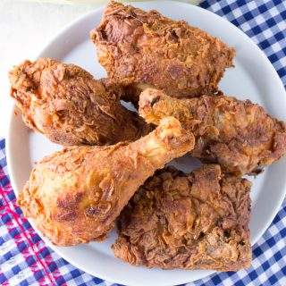

Home
Fried Chicken

Description
Recipe for deep fried chicken with a southern taste. The tangy hint of
buttermilk under a crispy coating makes this chicken stand out.
Ingredients
- 6 chicken thighs
- 6 chicken drumsticks
- 2 tablespoons salt
- 1 quart of cold water
- 2 cups of cold buttermilk
- 1 egg, beaten
- 1 teaspoon of chicken seasoning mix (see note)
- 3 cups of all purpose flour
- 2 tablespoons of chicken seasoning (see note)
- 2 quarts of vegetable oil for frying
Steps
-
Place chicken in a large bowl, cover with cold water, and mix in salt.
Cover and refrigerate for at least 8 hours.
-
Rinse chicken thoroughly, mix buttermilk, egg, and 1 teaspoon chicken
seasoning in a large bowl until thoroughly combined.
-
Place chicken in buttermilk mixture and refrigerate for 30 minutes to
1 hour.
-
Heat vegetable oilin deep fryer to 375 degrees F.
-
Place flour and 2 tablespoons of chicken seasoning in shallow bowl
and mix until combined. Remove chicken from buttermilk mix, shake off
excess, press into flour, and tap off excess flour.
-
Gently place chicken into hot oil, 3 to 4 pieces at a time; fry until
golden brown, 12 to 15 minutes per batch.
-
Remove chicken to a cooling rack set over paper towels to remove excess
oil before serving.
Cook's note:
To make seasoning: stir together 2 tablespoons black pepper, 2 tablespoons
garlic powder, 1 tablespoon paprika, and 3 tablespoons salt. Store in an
airtight container.